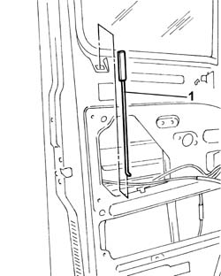
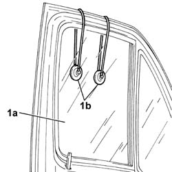
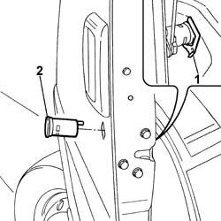
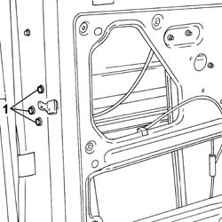
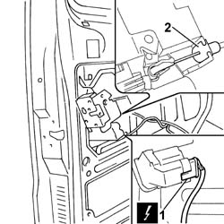

7005N21 FRONT SIDE DOOR LOCK MOTOR-LOCK ASSEMBLEY-R R
- Path
- Procedures > 70 FITTINGS > 7005 PASSENGER COMPARTMENT FRONT SIDE DOORS > 7005N FRONT DOOR CENTRAL LOCKING SYSTEM > 7005N21 FRONT SIDE DOOR LOCK MOTOR-LOCK ASSEMBLEY-R R
- Kind
- repair procedure (removal / refitting; the operation number is the code)
- Applies to
- all engines; all production periods
- Interactive page
- https://sloeber94.github.io/elrnDB-fDct/en/#/244001454
Applies to: all engines; all production periods
 Removing
Removing
 Refitting
Refitting- Disconnect the negative battery terminal.
Applies to: all engines; all production periods
Op. 7005E22 L/H OR R/H FRONT DOOR PANEL RADIO GRILLE (ONE) - R+R
Applies to: all engines; all production periods
Op. 7005E38 FRONT SIDE DOOR INTERIOR HANDLE-R R
Op. 7005E30 OBJECT POUCH ON ONE FRONT SIDE DOOR R R
Op. 7005E08 FRONT SIDE DOOR INTERIOR PANEL R R
Op. 7005A05 FRONT SIDE DOOR WATER GUARD PROTECTION R R OR ARRANGE
- Release the safety rod from the lock.
1. Remove the front side door safety device rod.

Applies to: all engines; all production periods
1. Undo the bolt fixing the descending window glass guide.
2. Remove the guide.

Applies to: all engines; all production periods
Op. 7005C51 FRONT SIDE DOOR INNER CATCH DEVICE - R+R FOR REPAIR OR REPLACEMENT
- Release the flexible cable from the door opening idler mounting bracket.
- Release the flexible cable from the door frame.
1. Remove the plate fixing spring.
2. Remove the plate.

Applies to: all engines; all production periods
1. Undo the bolts fixing the lock.

Applies to: all engines; all production periods
- Release the lock from the door frame.
1. Disconnect the electrical connector for the lock.
 | Description | Connector |
|---|---|---|
1 | Left front door lock geared motor | N050 |
| Description | Connector |
|---|---|---|
1 | Right front door lock geared motor | N051 |
2. Disconnect the flexible cable from the lock.

Applies to: all engines; all production periods
Refitting
Removing- Connect the flexible cable to the lock.
- Connect the electrical connector for the lock.
| Description | Connector |
|---|---|---|
. | Left front door lock geared motor | N050 |
| Description | Connector |
|---|---|---|
. | Right front door lock geared motor | N051 |
- Fit the lock in the special housing in the door frame.
- Fasten the lock to the door frame tightening the fixing bolts to the recommended torque.
 | Value - daNm | Fastening | Component | Ø |
|---|---|---|---|---|
. | 1,5 | Bolt | FRONT DOOR LOCK MECHANISM | M8 |
- Fit the lock barrel in the special housing in the door and in the lock.
- Secure the lock barrel to the door frame using the fastening spring.
- Insert the flexible cable inside the door frame.
- Secure the flexible cable to the door opening idler mounting bracket.
Op. 7005C51 FRONT SIDE DOOR INNER CATCH DEVICE - R+R FOR REPAIR OR REPLACEMENT
- Insert the safety rod in the special housing and connect it to the door lock.
Op. 7005A05 FRONT SIDE DOOR WATER GUARD PROTECTION R R OR ARRANGE
Op. 7005E08 FRONT SIDE DOOR INTERIOR PANEL R R
Applies to: all engines; all production periods
Op. 5570T90 FRONT SPEAKER - R R
Op. 7005E22 L/H OR R/H FRONT DOOR PANEL RADIO GRILLE (ONE) - R+R
Applies to: all engines; all production periods
Op. 7005C53 INTERIOR OPENING HANDLE - R R
- Connect the negative battery terminal.
Topics linked from this page (9)
- 5570T90 FRONT SPEAKER - R R
- 7005A05 FRONT SIDE DOOR WATER GUARD PROTECTION R R OR ARRANGE
- 7005C51 FRONT SIDE DOOR INNER CATCH DEVICE - R+R FOR REPAIR OR REPLACEMENT
- 7005C53 INTERIOR OPENING HANDLE - R R
- 7005E08 FRONT SIDE DOOR INTERIOR PANEL R R
- 7005E22 L/H OR R/H FRONT DOOR PANEL RADIO GRILLE (ONE) - R+R
- 7005E30 OBJECT POUCH ON ONE FRONT SIDE DOOR R R
- 7005E38 FRONT SIDE DOOR INTERIOR HANDLE-R R
- 7005M14 SWITCH UNIT CONTROLLING ELECTRIC WINDOWS REAR VIEW MIRRORS AND DOOR LOCK ON DRIVERS SIDE FRONT DOOR R R